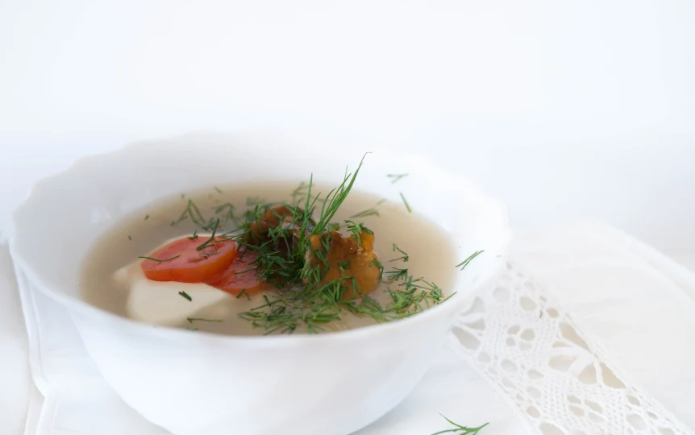

Mushroom Soup

Straight from Estonia
Delicious earthy soup that fills you right up to the brim
Make it ,eat it and make more to eat more.
Ingredients
- Glass of barley groats
- Onion
- Tomato
- Mushrooms
- Potatoes
- Oil
- Salt, Dill, Pepper
Steps
- Cook groats till they are soft
- Heat some oil, add sliced onions,mushrooms and tomato.
- Cook, while onion and tomato are half ready
- Add potato slices, groats and onion mix into the soup
- Cook, till the potato is soft and season it
- Serve with sour cream and add a lot of dills for that extra nature